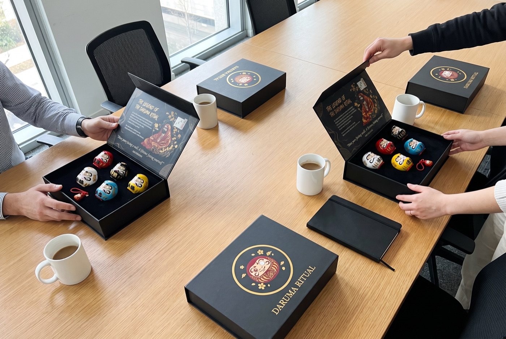
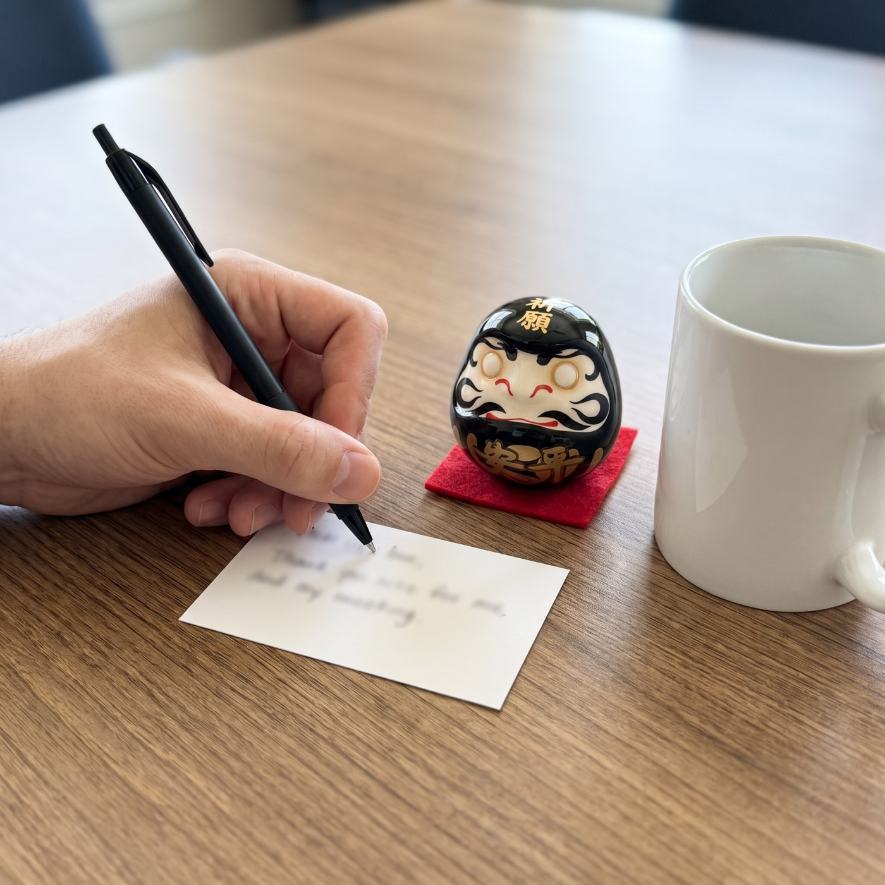

Team kickoff
What I Learned When I Swapped Our January Kickoff Slides for 12 Dolls With No Eyes
Every team sets goals in January. Mine used to forget them by Valentine’s Day. Here’s the 20-minute Japanese ritual we use now, and what our shelf looked like by December.
A story written by Daruma Ritual to show how the ritual is used. The customer messages quoted on this page are real.
I lead a team of 12. For six years, I ran the same January kickoff everyone runs.
A deck. Last year’s numbers. A slide called “Goals for the year”. Everyone nodding. Coffee and pastries.
By the middle of February, nobody on my team could tell you what their own goal was. I couldn’t always tell you mine.
The problem wasn’t the goals
The goals were fine. They were specific, they were realistic, they were in a shared document.
And that was exactly the problem. A goal in a shared document lives in a tab nobody opens. It has no weight. It doesn’t take up any space on your desk or in your day.
Here’s the comparison that changed how I think about it. A gym membership you never use is still a card in your wallet: easy to forget. A pair of running shoes by the front door is in your way every morning: hard to ignore. Same intention, completely different pull.
A goal needs to be somewhere you trip over it.
What I found in a 400-year-old tradition
A friend who runs a small gym told me she gives her members a Daruma when they commit to something hard. The finished ones go on a shelf in the gym. I had never heard of it.
A Daruma is a small, round Japanese doll that arrives with both eyes blank. It’s modelled on Bodhidharma, the monk who, according to legend, sat facing a wall for nine years. The base is weighted, so it rocks back up when you push it over: fall seven times, rise eight.
The ritual is simple. You choose one goal and paint the first eye. The doll sits where you’ll see it. When the goal is done, you paint the second eye. In Japan, election candidates do this on camera on election night.
It’s a goal that takes up space. Exactly what our shared document wasn’t.
Official Daruma Ritual store · Free tracked shipping worldwide · 30-day returns
How we ran the kickoff
I ordered three sets for the team. Each set has five ceramic Daruma (red, white, black, yellow and blue) in a black magnetic box with the legend card, so three sets covered all twelve of us with a few to spare.

Our 20-minute version
- 5 minutes: I read the legend card out loud. It takes about a minute; then people ask questions.
- 5 minutes: everyone picks a colour. Each colour has a meaning, and people enjoy choosing one that fits.
- 5 minutes: everyone writes one goal for the year on a card. Work or personal, their choice. Nobody has to share it.
- 5 minutes: we all paint the first eye at the same time. The doll’s own left eye, which is on your right as it faces you. Bring a few black markers; there isn’t one in the box.

That last step was the surprise. Twelve adults, very quiet, concentrating on painting a small black dot. Then a lot of laughing at whose dot was crooked.
What happened on the desks
The dolls went home with people or stayed on desks. Most stayed on desks.

I’m not going to pretend a ceramic doll changed anybody’s performance. I can’t measure that and I wouldn’t believe anyone who said they could.
What I can tell you is what changed in my one-to-ones. Before, “how’s your goal going?” got a blank look. Now people would glance at the doll on their desk and actually answer. Sometimes the answer was “badly”. That’s still a better conversation than a blank look.
Official Daruma Ritual store · Free tracked shipping worldwide · 30-day returns
The shelf
We made one rule in January: when you paint your second eye, your Daruma goes on the shelf by the kitchen.
By December, the shelf was nearly full.
Not every doll made it. A few still have one eye, and that’s fine; the ritual says you can give those a new goal, or start again next year. But walking past that shelf every morning beat any slide I’ve ever shown.
If you’re planning a kickoff, a retreat or a staff Christmas gift
This is for you if…
- You run a team, a gym, a class or a small company
- You want a January ritual people actually remember
- You want a gift that works for everyone without knowing them well
- You like ideas that take 20 minutes and cost little per person
Skip it if…
- You need goals tracked in software
- Your team hates anything that feels like a group activity
- You want something branded with your logo
The ritual, step by step
- Day 1Choose one goal. Write it down and paint the first eye: the doll's own left, which is the one on your right as it faces you. Any black marker works (one isn't in the box).
- Every day afterThe Daruma sits where you'll see it: a desk, a shelf, a nightstand. One eye open, waiting.
- Week 4Look at it and ask yourself one honest question: what did I do this week toward the goal?
- The day it's donePaint the second eye. Keep it as a record, or start again with a new goal.
Sets come with five Daruma each, so for a team of 10 you need two sets, and for 15, three. For bigger teams, there is a contact form on the site for larger orders.
Sets and prices
 1 Premium Set
1 Premium Set5 Daruma + 1 chiming keychain
2 Premium Sets10 Daruma + 2 keychains + $20 gift card free
3 Premium Sets15 Daruma + 3 keychains + $20 gift card free
Each set: 5 ceramic Daruma, matte-black magnetic box, legend & ritual cards. Free tracked shipping.
Official Daruma Ritual store · Free tracked shipping worldwide · 30-day returns
What people wrote after their sets arrived
Messages customers sent to Daruma Ritual, quoted word for word.
“These have arrived and I absolutely love them! I need to put in another order please. Will email you some numbers soon.”
“I was absolutely wowed when I received the package today. Both sets arrived completely unharmed. I am going to give them as holiday gifts. Blessed and grateful.”
“Finally I was able to perform our first ritual with my daughter and her husband. I will be purchasing more sets to give to my other children. … this was a good way to have them set goals to focus on all of the good things in their lives.”
Questions
What exactly is in a set?
Five ceramic Daruma in red, white, black, yellow and blue, a matte-black magnetic gift box with a velvet tray, the legend & ritual cards, and a chiming Daruma keychain.
Is a pen or marker included?
No. Any black marker or brush pen works for the eyes.
Do I need to know anything about Japanese culture?
No. The ritual card in the box explains the steps in a minute.
How does shipping work?
Shipping is free and tracked to every country. The delivery estimate is shown at checkout; international post is slower in December, so order early for Christmas.
What if it's not right?
You have 30 days after it arrives to request a return.
Planning a January kickoff? Order before the holidays: international post is slower in December, and the delivery estimate is shown at checkout.